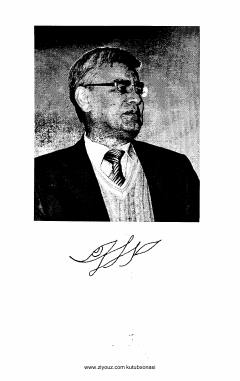

YTaniqli shoir Usmon Azimning yurakni to'lqinlantiruvchi she'rlar to'plami.
Ushbu to'plam taniqli o'zbek shoiri Usmon Azimning teran va ta'sirli she'rlarini o'z ichiga oladi. Kitobda inson qalbi, hayot mazmuni va kechinmalari poetik tarzda aks ettirilgan.